DataFrame Indexing Methods#
We will explore four methods that index data within a Pandas DataFrame. The abundance of approaches can be overwhelming and this write-up aims provide clarity. For additional information, refer to the Pandas DataFrame Documentation.
API |
Index/Position |
Comment |
|---|---|---|
|
rows by position, columns by name |
One argument only |
|
by index |
|
|
by position |
Columns by position, too |
|
by position |
|
Except for loc the API are [inclusive : exclusive].
Argument Types#
Type |
Example |
Notes |
|---|---|---|
Number |
|
Describes the position, or,index |
Numerical Slice |
|
A slice using numbers (positional) (index) |
Numerical List |
|
List of numbers (positional) (index) |
Mask |
|
Any iterable of True/False values |
String |
|
A column name (or index value) |
String Slice |
|
Represents a range of columns |
String List |
|
A list of column names |
API Details#
df[]takes a single argument only.Slices are
[ Inclusive : Exclusive ].The most common usage is to get a
Series(column) from theDataFrameviadf['col_name'].One can add a column to a
DataFramewithdf['new_column'] = list_of_values
It is important to note here that when a numerical slice is used, the values represent positions, not the index. When string values are used, the values represent column names.
Valid Argument Types:
Numerical Slice: represents the Row Positions
Mask: represents which Rows to keep
String: column name
String List: list of column names
Invalid Argument Types:
Numerical List: You cannot use
df[[0, 5, 8]]to access a list of rows.String Slice: You cannot use
df['first':'exclude_me']to access a slice of columns. Instead, you must use a list of strings.
Examples:
Valid |
Results |
Invalid |
Note |
|---|---|---|---|
|
DataFrameAll columns, 1 row |
|
single number NOT allowed |
|
DataFrameAll columns, 2 rows |
|
List must be column names |
|
DataFrameAll columns. Many rows |
All rows at those positions. If the slice is completely out of bounds, an empty DataFrame is returned. |
|
|
DataFrameAll columns, rows where mask==True |
Length of mask must be len(df) |
|
|
DataFrameAll rows with columns ‘C’ and ‘D’ |
The columns are ordered as they appear in the list. |
|
|
DataFrameAll rows, one column ‘C’ |
A list of just 1 still results in a DataFrame. |
|
|
Series. Column ‘C’ |
|
Column slices NOT allowed. |
Note that, except for the last example, all valid API return a DataFrame.
df.loc[rows, cols]takes one or two arguments.To get all rows, use an ‘empty’ slice:
df.loc[ : , 'Name']Each argument can describe multiple values or a single value.
The type returned depends on the argument types (vectors vs scalar [1][2]).
If both arguments are vectors, a
DataFrameis returned.If exactly one argument is a vector, then a
Seriesis returned.If both arguments are scalar, then the contents of the single cell is returned.
Slices are
[ Inclusive : Inclusive ].One can set a value.
df.loc[1, 'Name'] = 5will set theDataFrame’s value to 5 at index 1 and row ‘Name’.
The first argument describes the indices of the rows desired.
The second argument describes the column names desired.
Valid Argument Types:
Slice: For rows, the slice must match the index type. For columns, the slice indicates the names of the columns to include and every column between.
Mask: Represents which rows/cols to keep. Mask is an iterable of True/False values (such as a
Seriesor a list)List: A list of indices or column names to include.
Examples:
Valid |
Note |
|---|---|
|
Rows with indices 0 & 3, and everything in between |
|
Since indices don’t need to be sorted, this will have index 11 as the first row and index 5 as the last row, and all rows that are positioned between them. |
|
Gets all the rows where mask1 is True, and all the columns where mask2 is True. len(mask1) == count of rows. len(mask2) == count of columns. |
‘df.loc[ : , df.columns != ‘Bad’]` |
Gets all the rows and all the columns except for ‘Bad’. df.columns is a list of column names. The result of comparing the list to ‘Bad’ is a list of True/False values… a mask |
|
Each list represents which row/column to keep. The result has the same order as that provided in the list. |
Why Inclusive?
The reason this API is inclusive is because one will often want to get a set of columns that one knows about. It is better to say:
“I want all the columns starting with ‘One’ and ending with ‘Last’”
than it is to say:
“I want all the columns starting with ‘One’ and goes until the column after the ‘Last’ column that I want named… gosh, what is the name of the column that I don’t want?
The same can be true for rows when the index is not sorted.
Under constructions.
df.iloc[rows, cols]takes 1 or 2 arguments.Arguments are primarily integers that represent position, but can also be a boolean mask.
Arguments can also be a lambda for with the argument of the lambda is the calling object, either a DataFrame or Series.
There are no string arguments.
Valid Argument Types:
integer that represents the position of the row or column.
Numerical Slice that represents the positions of the rows or columns.
Numerical List that represents the positions of the rows or columns.
under construction
Examples#
df = 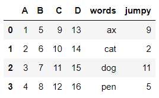
Result |
API |
|---|---|
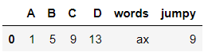 |
|
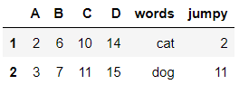 |
|
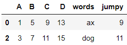 |
|
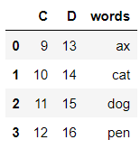 |
|
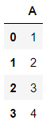 |
|
Series: Column ‘A’ 0 11 22 33 4Name: A, dtype: int64 |
|
Series: 2nd Row with index 1 A 2B 6C 10D 14words catjumpy 2Name: 1, dtype: object0 |
|
Scalar Value: |
|
DataFrame |
Result |
API |
|---|---|---|
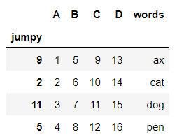 |
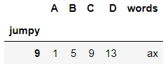 |
|
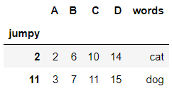 |
|
DataFrame |
Result |
API |
|---|---|---|
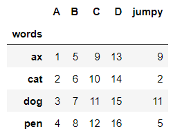 |
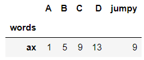 |
|
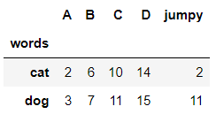 |
|
df.take()#
df.take() is primarily a positional based indexer/slicer. It will return the columns or rows in the position specified by the inputs, which will either be a single value, list, or slice. It has another parameter, axis, which is set to 0 by default. The default parameter refers to the index/rows, meaning we are selecting rows to extract. If you set axis to 1, then it will select columns.
Since df.take() is positional based, you cannot input labels. They must be integers. Additionally, it ignores whatever custom index you may have applied, even if it is an integer index. It will use the underlying positional index to collect the data. Remember, you need to include the square brackets, because the function takes only lists.
'''
Series based on a row
'''
s1 = df.take([1]) # returns a series representing row 1
'''
Series based on a column
'''
s2 = df.take([1], axis=1) # returns a series representing column 1
d1 = df.take([1, 3, 0]) # returns a dataframe containing rows 1, 3, and 0
# Setting `axis` to 1 indicates whether the list of indexes is for **rows** or **columns**
d2 = df.take([1, 3, 0], axis=1) # returns a dataframe containing columns 1, 3, and 0
Make sure to look out for
IndexErrorexceptions, which will arise if you input a number that is not in the index. This means you can’t uselen(df)as a parameter in order to get the last row of the dataframe.You can use negative indices. This works similarly to slicing in lists in base python, where the -1 index corresponds to the last value of the set.
df.take([0])returns the first (0 position) row.
Footnotes#
[1] Vector is intended to a data structure that can hold multiple values such as a list, slice, or array, even when these structures contain a single value.
[2] Scalar is intended to mean a single value such as a string or integer. It is NOT a list, slice, or array.